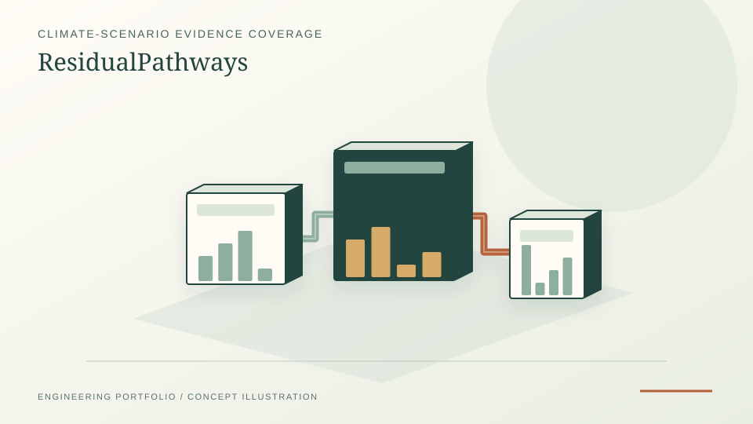

Coverage-only research candidate; human scientific review pending.
Independent open-source research / October 2026
ResidualPathways — Climate-scenario research
Open research on IAM scenario reporting, evidence provenance, and the identifiability of residual-emissions claims. A hosted atlas visualizes coverage, not verified physical gross/removal accounting.
PythonIAMCSciPyHiGHS

PROJECT REFERENCE / RESIDUAL-PATHWAYS1,202 matched vetted scenarios, 352 reporting-presence aggregates.
Zero verified I3 gross/removal partitions; no institutional endorsement.
Reporting coverage
The October 2026 frozen coverage-only candidate contains 1,202 climate-vetted scenarios and 352 reporting-presence aggregates across four milestone years. Source coverage is not the same thing as a verified emissions-flow identity.
Research approach
Audited AR6 IAMC reporting and historical CD-LINKS observations are kept separate from hypothetical optimization cases. Results are presented with the applicable evidence class and unverified gates.
Atlas and limitations
The public atlas is an evidence exploration interface. No I3 physical gross/removal partitions have been independently verified and the candidate review remains pending.
Sources and reproducibility
Live evidence atlas →
Explore public scenario reporting coverage.
Source and tests →
Reproducible scientific and website source.
Working paper (Markdown) →
Research draft, not peer reviewed.
Source semantic audit →
October source and scientific-gate evidence.
What this does not establish
No verified I3 physical gross-emissions/carbon-removal decomposition, publisher-authenticated approval or IPCC/IIASA endorsement. Source-variable presence is not sufficient to infer true physical carbon flows.